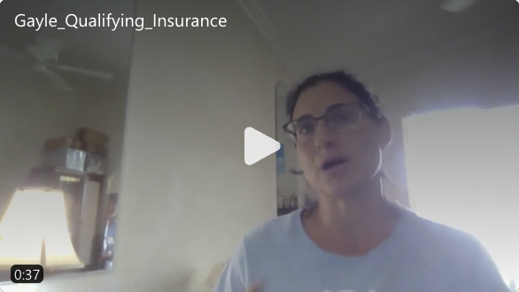
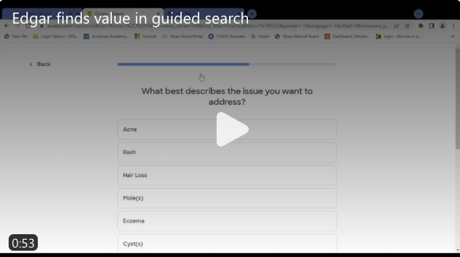
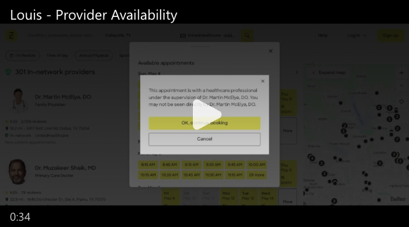
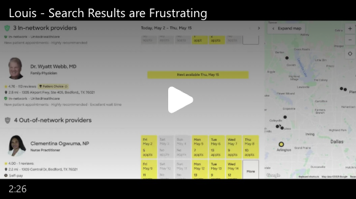

7
Case study
Insights from a Zocdoc Search
Scheduling only works when people believe the results in front of them. I ran seven moderated sessions to understand what created that trust — and what broke it before anyone clicked Book.
tl;dr
- Insurance accuracy and verification were top priorities because they quickly signaled whether a provider was actually viable.
- ZocDoc’s guided search was appreciated when it narrowed results and saved time.
- Provider matching and search result accuracy determined whether the platform felt trustworthy.
- Typing stayed the preferred way to search, even when participants were open to voice or AI-assisted input.
- Fast filtering and visible availability made it easier for people to compare options and move toward booking.
What We Learned
Trust Started with Insurance and Accurate Matching
Insurance filtering was the first major credibility test. Participants wanted to believe that the results reflected their current plan, but confidence dropped quickly when specialty labels felt wrong or the provider mix seemed inconsistent with what they had asked for.
That made insurance more than a filter. It acted as a trust signal. If patients were unsure whether the system had their coverage right, they began to question the entire provider list. Several participants wanted stronger ways to verify that the platform was working from accurate and current insurance information.
This also exposed why provider matching mattered so much. A result that looked slightly off could turn a promising search into a frustrating one because it signaled that the platform might not understand the patient’s actual need.

“This says orthopedics, but he’s a physician assistant. There’s no way he does surgery. So like why? I just, I’m frustrated.” Meagan M.

Guided Support Helped When It Felt Timely and Optional
Guided search was one of the clearest mixed signals in the study. Participants liked the idea of a flow that could narrow results and reduce the burden of sorting through too many irrelevant providers.
The value was real when the prompts came early enough, clarified the search, and led to visibly better results. In those moments, the experience felt supportive.
That same feature became frustrating when it appeared too late, slowed the process, or seemed disconnected from what the patient was already trying to do. The study showed that guided support works best as a confidence booster, not as a forced detour.
“I think that {adding more questions to narrow providers} would really slow it down... and with my insurance, I may have to go to a PCP to get a referral anyway.” Robert C.
Availability and Filtering Determined Whether Results Felt Actionable
Once participants reached the results page, the search shifted from discovery to qualification. Insurance, provider type, and location stayed important, but availability often became the deciding factor.
People were willing to trade reputation or familiarity for a provider who could be booked quickly. When availability was absent, hard to find, or required a separate call, the result often stopped feeling useful.

This is also where filtering gaps became more costly. Missing sort options, weak relevance, or results that ignored known criteria made patients open extra tabs, cross-check Google, or abandon the option entirely. The product had to do more than list providers. It had to support comparison and action.

Secondary observations
Cross-Selling: Relevance and Consent Matter
Participants were open to alternative provider options when their first choice was unavailable, but only within clear limits. They were comfortable being redirected for general concerns, but strongly preferred a specialist for specific conditions like dermatology or hair loss. Relevance and consent were the conditions — not just availability.
Looking for Other Services: Anchored in the Primary Need
Most participants came in looking for a primary care provider, but many surfaced secondary needs — pediatric care, follow-up appointments — during the search. These weren’t prompted by cross-sells; they emerged organically from the process, which suggests the platform had more room to support adjacent needs without actively pushing them.
Use of AI and Voice Input: Modern, but Not Always Welcome
Participants saw potential in AI and voice input but kept it at arm’s length. Typing stayed the preferred method on desktop, where people felt more in control. Voice was seen as useful on mobile, but optional. The pattern was consistent: participants wanted the tool to serve them, not the other way around.
Feature Suggestions: Smarter, Simpler, More Personalized
Participants wanted filtering that used information the platform already had — insurance, location — rather than making them re-enter it. Several also wanted visual signals like badges or availability indicators to reduce comparison effort. The common thread was reducing the work between search and a bookable result.
Outcome of the Research
The study sharpened the product conversation around trust. It showed that search quality was not simply a relevance problem; it was a confidence problem. Patients needed stronger proof that the platform understood their insurance, respected their criteria, and could help them move toward a realistic appointment.
That reframed several potential improvements. Insurance qualification needed to feel more authoritative. Guided search needed to become an assistive layer rather than a mandatory step. Availability and filtering needed to be treated as action signals, not just supporting details.
Implications
- Strengthen confidence in insurance qualification before patients commit to a result set.
- Use guided search to reduce effort, but only when it improves relevance and stays optional.
- Treat availability, filtering, and specialty fit as core decision signals in the results experience.
It also clarified how important timing is when introducing supportive features. Participants were open to guidance when it reduced work, but they resisted it when it arrived too late or took control away from them. That distinction matters in research because it turns a vague finding about “friction” into a product decision about sequencing, control, and optionality.
Continue Exploring
Contact
Want to talk through the Zocdoc discovery work?
The trust findings, how guided search performed, or what seven moderated sessions can and can’t tell you — happy to get into any of it.
A good conversation is usually a better start than a formal intake form.